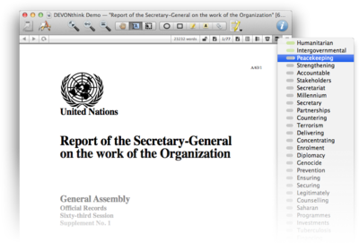
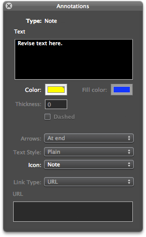

|

PDF views are similar to image views, but come with specialized options for viewing PDF documents. Also, PDF views support the
Edit > Find
commands.
Sidebar
The sidebar shows thumbnails of the pages within the PDF document. Click a thumbnail, select that page, and scroll to it; hold the ⇧ or ⌘ keys to select multiple pages. Reorder pages by dragging a page to the new position and use
Edit > Delete Selected Page(s)
to remove the selected page(s). Use
Edit > Rotate
to rotate PDF pages. Contextual menu commands, e.g., copy and paste, are available, too.
You show and hide the PDF sidebar using the Show/Hide Sidebar button in the PDF''s navigation bar.
|
Note: Only real PDF documents are editable; converted (e.g. EPS, PostScript, or Adobe Illustrator files), Skim documents (PDF packages), and PDF previews generated by QuickLook are not editable.
|
Annotating PDFs
You can use DEVONthink Pro Office to annotate PDF documents. To add or edit annotations, open the PDF document in a separate window (e.g., by double-clicking it). You will find all necessary tools in the toolbar:
-
Tool: Switch between moving, selecting text, and selecting elements such as annotation post-it notes.
-
Annotate: Select your annotation tool of choice: ellipsis, rectangle, post-it note, text rectangle, line, arrow, and link.

To add an annotation, select your annotation tool, then "draw" it into the page. Double-click the annotation to open the annotation panel which lets you fine-tune your annotation. Depending on the type of annotation, you can change its attributes. Change the text color in the annotation panel; use the standard
Fonts
panel to change the font of a selected text annotation. Drop other documents, files from the Finder, or URLs into the URL field to insert cross-links, paths, or URLs.
To move or delete an annotation, select it with the "select elements" tool. Position it with the mouse. Press the Delete key or use
Edit > Delete
to remove it.
Toolbar & shortcuts
-
Annotate: Provides annotation tools. Read more...
-
Tool: Selects the editing mode. Read more...
-
Delete Pages: Deletes the selected pages of a PDF document.
-
OCR: Converts the document to a searchable PDF.
Please find a list of shortcuts in the appendix. Read more...
Contextual menu
-
Actual Size: Zooms the image so that it appears at its real size, calculated from the actual pixels and the resolution information contained in the PDF.
-
Add tag [word]: Tags the document with the selected word (only available if the word is not already a tag of the document).
-
Auto Size: Resizes the PDF automatically so that it always fits the size of the view/edit pane or the document window.
-
Continuous Scoll: When checked, DEVONthink Pro Office displays the pages of a mutli-page PDF like one long scroll. If unchecked, it displays the PDF page by page.
-
Copy Page Link: Copies a URL to the clipboard pointing directly to the shown page of the document.
-
Delete Annotation: Deletes the selected annotations.
-
Highlight: Highlights the selection. Using this command on a selection again removes the highlighting.
-
Link To: Marks the selected text as link and links it to the item chosen in the sub-menu. This saves you from having to create a link annotation first and then select the target in another step.
-
Open Link in New Tab: Opens the selected link in a new tab.
-
Open Link: Opens the selected link.
-
Previous/Next Page: Jumps to the previous or next page.
-
Rotate Left/Right: Rotate the page left and right.
-
Search selected phrase: Searches for the selected text as a phrase.
-
See [word]: Opens a drawer with documents related to the selected word.
-
See Related Text: Opens a drawer with documents related to the selected text passage (only available when more than one word is selected).
-
Set Name As: Renames the document according to the selected piece of text.
-
Share: Shared selected text via the available OS X sharing extensions (OS X Mountain Lion or later)..
-
Single Page/Two Pages: Displays the PDF either as one page or as facing pages (like in a magazine).
-
Zoom In/Out: Zooms in and out of the PDF.
The PDF sidebar also offers commands for working with single pages:
-
Copy Page Link: Copies a URL that points directly to the selected page.
-
Copy Page Link: Copies a URL to the clipboard, pointing not only to the document itself but the actual page.
-
Cut/Copy/Paste: Cuts, copies, or pastes a PDF page.
-
Delete Selected Page: Deletes the selected page.
-
Insert Blank Page: Inserts a blank page into the PDF.
-
Rotate Left/Right: Rotate a selected page left and right.
-
Select/Deselect All: Selects or deselects all pages.
-
Split Document: Splits the PDF at the selection into two documents.
-
Undo/Redo: Undo or redo the last action.
|